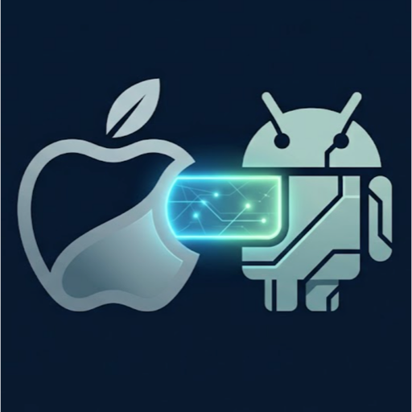

Mirror or extendExtend is experimental
Mirror duplicates a display you already have. Extend creates a virtual display at the tablet's native pixel size, so text stays sharp instead of being scaled twice.
Mac + OnePlus Pad Go 2
One+Connect streams your Mac screen to the tablet over USB-C or Wi-Fi and sends every touch back as mouse input. Mirror an existing display or extend the desktop onto the tablet panel at its full 2800 × 1980 pixels.
Version 0.1.0. Frames travel over the USB-C cable or your own Wi-Fi network and nowhere else — there is no account, no telemetry and no cloud service involved.

What it does
Every setting below is in the Mac menu bar — nothing needs to be configured on the tablet.
Mirror duplicates a display you already have. Extend creates a virtual display at the tablet's native pixel size, so text stays sharp instead of being scaled twice.
Not a fallback order. Pick Automatic, USB cable only or Wi-Fi only — Wi-Fi stays wireless even with the cable plugged in, and switching takes effect immediately.
Tap, drag, long press, two-finger scroll and pinch all map onto real macOS events, so the tablet drives whatever app is under the pointer.
HEVC carries the same picture in roughly half the bits of H.264, which is what keeps a wireless link as sharp as the cable. When the link falls behind, the bitrate eases down and recovers instead of dropping whole frames.
How it works
On Wi-Fi the tablet announces itself once a second on UDP 27184, so the Mac finds it without you typing an address.
Setup
Do them in order — macOS grants the two permissions to the copy of the app in Applications, so install it before launching.
Open the downloaded disk image and drag One+Connect into Applications. The app is signed with a self-signed development certificate, so the first launch needs right-click → Open rather than a double-click.
The Setup Assistant opens on first launch with a button for each. Screen Recording lets the app capture the display it sends; Accessibility lets it turn your touches into clicks. Both are required, and macOS may ask you to relaunch once.
Copy the APK to the tablet and tap it, allowing installation from unknown sources when prompted. With adb on hand, adb install -r OnePlusConnect-0.1.0.apk does the same thing.
Open One+Connect on the tablet, then pick your link in the Mac menu bar under “Connect over”. The menu reads “Ready to share” once the handshake succeeds.
Enable Developer Options → USB debugging on the tablet, plug in the cable and accept the authorisation prompt. This route needs adb installed on the Mac.
Put both devices on the same network. macOS asks once to allow local network access. If your router blocks broadcasts, type the tablet's address into Preferences → Wi-Fi.
Choose Display → Mirror or Extended, then Start Sharing. The tablet goes fullscreen and the Mac menu bar shows the live link. A three-finger tap on the tablet brings up Stop Sharing; Diagnostics on the Mac shows throughput, latency, drops and round-trip time while it runs.
Reference
| Gesture | On the Mac |
|---|---|
| Tap | Click |
| Drag | Click and drag |
| Long press | Right click |
| Two-finger move | Scroll |
| Pinch | Zoom, via Command plus or minus |
| Three-finger tap | Show the Stop Sharing overlay |
| Back | End the session |
| Preset | Resolution | Bitrate |
|---|---|---|
| Battery Saver | 1280 × 900 | 6 Mbps |
| Balanced | 1920 × 1350 | 16 Mbps |
| Quality | 2240 × 1584 | 30 Mbps |
| Native | 2800 × 1980 | 60 Mbps |
Before you install